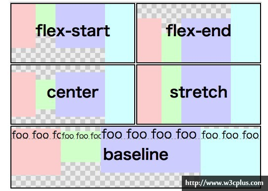
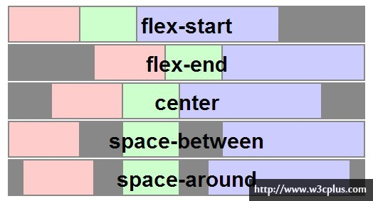
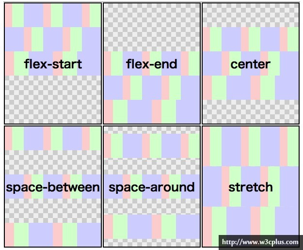

<link rel="stylesheet" type="text/css" href="xxx.css"/> <style type="text/css"> ... </style> <p style="color: xxx;"></p>
h1, h2, p {} /*共用声明*/
x y {} /*y是x的子*/
x > y /*y是x的直接子, can also: x>y */
x + y /*x后面兄弟中第一个y*/
# /*id*/
. /*class*/
x#y /*x的id为y
[attr] {} /*带有attr属性的*/
[attr=lalala] {} /*attr属性为lalala的.只有这一个值*/
[attr~=lalala] {} /*attr有一个是lalala，还可以有其他:attr="lalala bbb" */
[attr^=lalala] {} /*attr以lalala开头*/
[attr$=lalala] {} /*attr以lalala结尾*/
[attr*=lalala] {} /*attr包含lalala*/
[attr!=lalala] {} /*attr=lalala或attr以en-开头*/
/*
* 设置顺序：
* a:link/a:visited ==> a:hover ==> a:active
*/
a:link {} /* un visited */
a:visited {}
a:hover {}
a:active {} /* being clicking */
selector : pseudo-class {}
a:link
a:visited
a:hover
a:active
input:focus
x:first-child /* 若x是它父亲的第一个子元素*/
q:lang(no) {}
x:first-line /*排版后（实际页面中）第一行设置*/
x:first-letter
q:lang(no)
{
quotes: "~" "=" /*<q>会加引号。这里把引号替换为~和=*/
}
<q lang="no">xxx</q>
Object.style.xxx
background: background-color: /* 不能继承，默认transparent */ background-image: url(a.jpg) /* 不能继承。所有背景属性都不能继承。 */ background-repeat: repeat/repeat-x/repeat-y/no-repeat background-position: center/top/bottom/left/right/center/100px/5cm/20% /*应有两个关键字，水平和竖直。只有一个则默认另一个是center */ background-attachment: fixed/scroll
text-indent: 5em text-align word-spacing: +/-/0 单词间距 letter-spacing # 字符间距 text-transform: none/uppercase/lowercase/capitalize text-decoration: none/underline/overline/line-through/blink white-space: normal/pre/nowrap/pre-wrap/pre-line * normal: 所有空白变成一个space * pre: 保留所有空格，tab，回车 * nowrap: 防止换行，除非br * pre-wrap: 保留所有，并允许自动换行 * pre-line: 合并空格，保留换行
/* * font-family: * General: serif/sans-serif/monospace/cursive/fantasy * Specific: Georgia, ... */ font-family: font-family: Georgia, Times, 'New Century Schoolbook', serif; font-size: /* 1em = 1x当前尺寸 */ font-style: italic/normal font-weight: normal/bold
/* * 把li设为inline则不用换行 */ list-style-type: none/square/circle/upper-roman/lower-alpha list-style-image: url(a.jpg) list-style-position: inside/outside list-style: square, inside, url()
table {
border-collapse: collapse; /* 防止双边 */
}
table, th, td {
border: 1px solid black;
width:
height:
vertical-align: bottom;
}
/* * can be negative * 两个外边距合并为较大者 */ margin: x x x x /* top right bottom left */ margin: x x x /* top right bottom */ margin: x x /* (top bottom) (right left) */ margin: x /* all */ margin-left: margin-right: margin-bottom: margin-top:
border-style: none/solid/dotted/dashed/double/outset/inset border-style: solid dotted dashed double /* also use top-right-bottom-left */ border-top/right/bottom/left-style: border-width: border-top/right/bottom/left-width: border-color: border-top/right/bottom/left-color:
/* * div, h1, p ===> block * span, strong, a ===> inline */ position: static/relative/absolute/fixed /* * static: 块元素占一行。行内元素为行框，置于其父元素之中。 * relative: 元素框便宜某个距离。元素仍保持其未定位前的形状，原本所占空间仍然保留。 * absolute: 元素框从文档流中完全删除，并相对于其包含块定位。定位后元素是一个块框。 * fixed: 同absolute。相对于整个视窗定位。 */ overflow: hidden/scroll /* * float: * 直到其外边缘碰到包含框或另一个浮动框 * 浮动框不在文档普通流中。 */ float: right/left /* * 元素右/坐/两边不能出现浮动框 */ clear: right/left/both/none;
xx {
display: flex;
/*
* flex-flow = flex-direction + flex-wrap
* flex-direction:
* row: 行。主轴。
* row-reverse: 主轴起点与终点交换
* column: 列。侧轴为主轴。
* column-reverse
* flex-wrap:
* nowrap: 单行。
* wrap: 多行。
* wrap-reverse: 侧轴起点与终点交换。
*/
flex-flow: row wrap;
/*
* align-items:
* 侧轴对齐伸缩项目
* flex-start/baseline
* flex-end
* center
* stretch: 伸缩项目拉伸，填满整个侧轴
*/
align-items: center;
/*
* 主轴对齐伸缩项目
* flex-start
* flex-end
* center
* space-between
*/
justify-content:
/*
* 伸缩项目堆栈伸缩行
* flex-start
* flex-end
* center
* space-between
* space-around
* stretch
*/
align-content;
/*
* 默认时是0
* 越大越靠后
*/
order: 1;
/*
* flex = flex-grow + flex-shrink + flex-basis
* example:
* flex: 1; ==> flex-grow
* flex: 1 100px; ==> flex-grow flex-basis
* flex: 1 2 100px; ==> flex-grow flex-shrink flex-basis
* flex-grow: 比例。若没设置basis，则按照所有比例分。
* flex-shrink: 收缩比例。若空间不够，则按照这个比例减少。
* flex-basis: 先分basis，多出的再按照grow分。
*/
flex:
/*
* flex: auto; ==> flex: 1 1 auto;
* flex: initial ==> flex: 0 1 auto;
*/
  